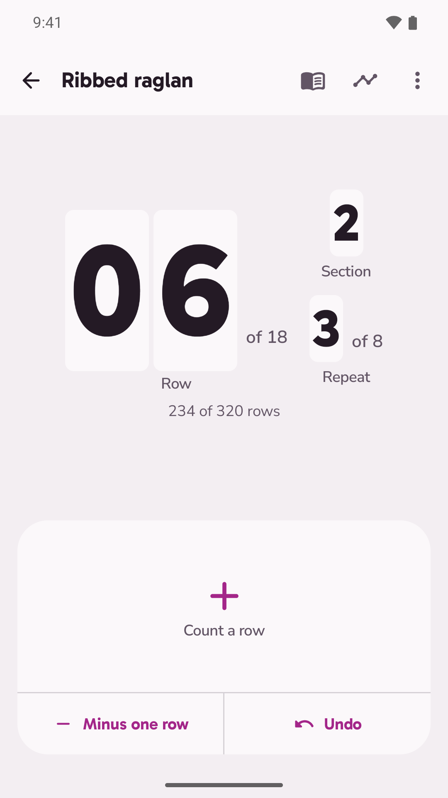
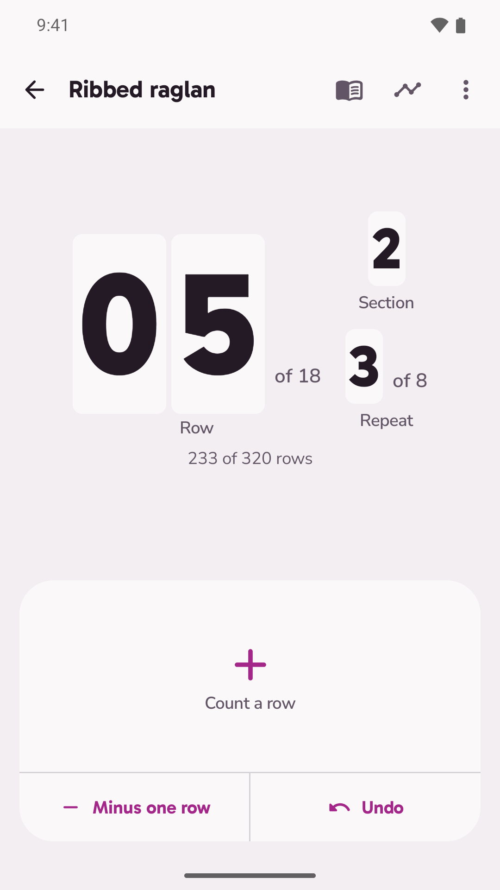
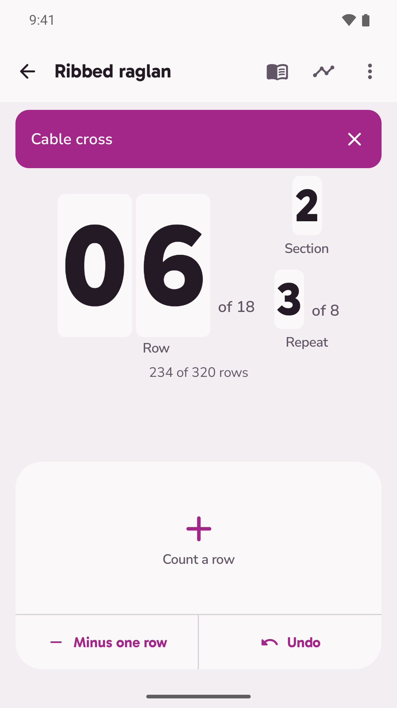
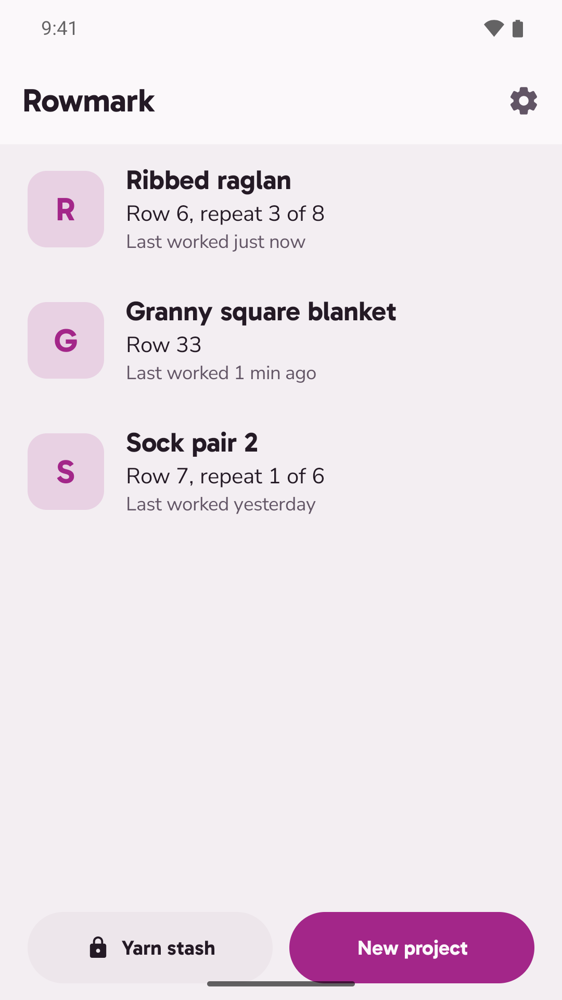

Linked counters, a volume key or a shutter remote to count with, and a bell when the cable cross is due.
Get it on Google Play Free on Google Play, unlock everything once for USD 2.99. Works fully offline.
The row sits on a drum modelled on the barrel counter knitters slide onto a needle. Each count rolls one digit, and a repeat drum turns beside it when the row returns to 1.
The unlock adds what pattern followers pay for. No subscription, no account, and your counters stay free either way.



No account, no analytics, no internet permission. Buying or restoring the unlock goes through Google Play and needs a connection once; after that everything works offline, and the unlock belongs to the Google account that bought it.